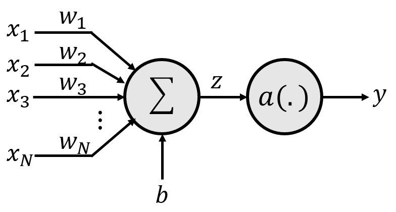
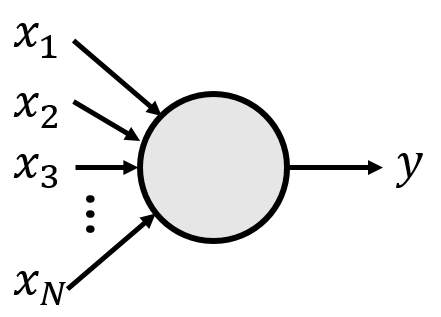
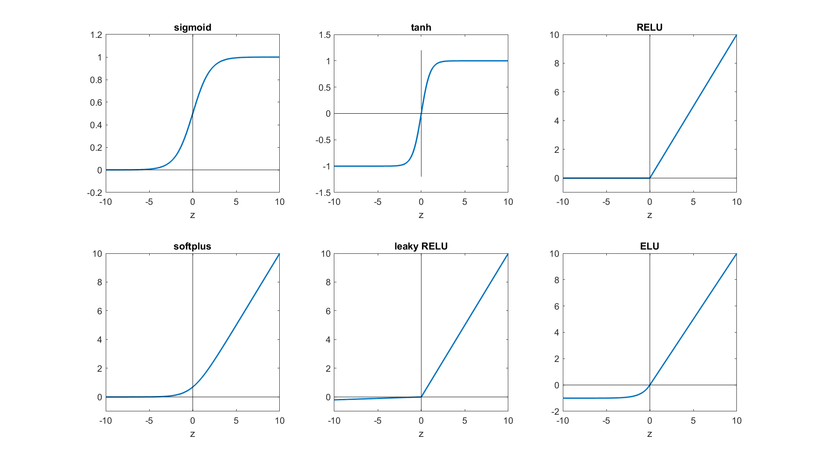
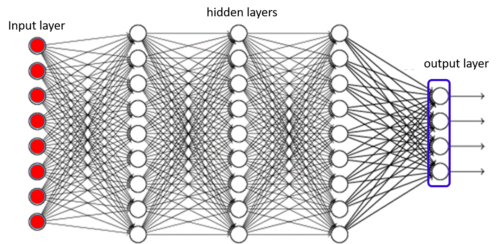

A neural network is simply a function that takes in an input $X$ and computes an output $Y$. In this regard, it is no different from any other function. What sets it apart from a function such as, say $y = sin(X)$, is the manner in which it is constructed. It is composed as a network of many, very simple elements that together somehow manage to perform amazing tasks. The term “neural” itself derives from the fact that the simple units that are networked to compose the model are conceptually similar to neurons in the brain, and were in fact originally designed as models for these neurons.
The basic unit of a neural network is an element, often called a neuron or a perceptron that has the following structure.

The parameters of the perceptron are a set of weights $w_1, w_2, \cdots, w_N$, and a bias $b$.
The actual computation performed by the perceptron is as follows:
We will generally not represent neurons with the detailed structure shown above, but simply represent it using the simplified structure below. Note that the weights, bias and activation are not explicitly shown in the figure, but are all always implied.

The activation function $a()$ is a deceptively simple non-linear transformation that is the source of the magical capabilities of the neural network. The most commonly used activation functions are:

The figure above graphs the activation functions we have just described (for the ELU we have used $\alpha = 1$). A number of other activation functions have also been proposed in the literature.
For simple networks (like those needed in HW1), sigmoid, tanh and Relu are the ones you may want to try first.
There is also another, special activation function, not mentioned above, called the softmax activation. Unlike the activations above which take a single input $z$ and output a single value $y$, the softmax activation takes in multiple inputs simultaneously, and produces multiple outputs simultaneously. We will explain softmax activations in the next section.
A multi-layer perceptron is a network of units of the kind defined above. The figure below shows a typical MLP structure.

Each circle in the figure represents a neuron. This is a multi-layer perceptron because the neurons are arranged in many layers, such that neurons from any layer only connect to the neurons from immediately adjacent layers. (We will also see networks without such layered structure in the course, but such layered architectures are the most common).
The “flow” of information in this figure is from left to right. Each layer of neurons computes its outputs, using the ouputs of the layer of neurons immediately preceding it (to its left).
The blue bullets in the figure represent the input. There are no neurons here, just the inputs; nevertheless this layer of elements is called the input layer. Again, to reiterate -- there are no neurons in the input layer. The input layer is just the location in the network from where inputs are provided to the network.
The layers between the input and the final layer are called hidden layers. That is because the outputs of these layers are not directly observed -- the actual output of the network is the output of the final layer. In this example there are three hidden layers.
The final layer (to the extreme right) is the output layer. The outputs of this layer of neurons is returned to the user. The output layer is different from other layers, so it is worth spending some time on it.
In the figure the output layer is shown enclosed in a blue rectangular box. This is to indicate that this is not infact a set of 4 independent units. In most problems, the network is used to perform a classification task, where we must select one of $K$ classes for a given input. Rather than directly choosing the class, the network actually outputs the a posteriori probability of each of the classes (i.e. given an input $X$, it outputs $P(class=i|X)$). In this figure there are four outputs, indicating that the network is classifying between four classes. Each of the four outputs is the a posteriori probability of one of the classes. .
Since the four outputs are the probabilities for four classes, they must all sum to 1.0. In other words, the individual outputs are not independent of one another. Modifying one output (e.g. increasing it) will affect the other outputs, so that they all sum to 1.0. In order to achieve this behavior, it is not sufficient to use regular activation functions. For the output layer we must use the softmax activation mentioned earlier.
The softmax activation takes multiple inputs and produces multiple outputs that sum to 1.0. Given $N$ inputs $x_1, \cdots x_N$, it computes $M$ outputs $y_1, \cdots, y_M$, where the $i^{\rm th}$ output, using the two step process shown below. In the first, it computes $M$ independent affine combinations, $z_1, \cdots, z_M$ as \[ z_i = \sum_{j=1}^N w_{ij} x_j + b_i \]
Subsequently, it computes the $M$ outputs $y_1,\cdots, y_M$ as \[ y_i = \frac{e^{z_i}}{\sum_{j=1}^N e^{z_j}} \]
Note that the outputs sum to 1.0.
The softmax activation is typically used in the final layer of a neural network, to assign probabilities to various outcomes.
The MLP shown above can now be used to process inputs.
The first step in using the MLP is to determine how the input to it is represented. MLPs are mathematical machines -- they take in numbers and output numbers. So any input provided must first be converted to a vector (or matrix) of numbers.
The task of converting your input (which could be as complex as the state of a game) to a suitable numeric vector is itself challenging. Fortunately, for simple tasks like classifying MNIST digits (as is required for HW1), you can simply arrange pixel values (which are, after all, numbers) into a vector, and voila, you have your numeric input vector.
We will deal with numeric representations of more complex inputs later in the course.
The output of the network too is expected to be numeric. In a classification task, such as classifying input images of digits into one of 10 digit classes, we will require an appropriate way of representing classes numerically.
We will do so using one-hot vectors. A one-hot vector is a vector that contains a single component that has value 1, and all other components are 0. So, for instance $[0\,0\,1\,0\,0]$ is a one-hot vector.
We will represent classes as one-hot vectors. The dimensionality (number of components) of the vector will be the total number of classes. To represent the $i^{\rm th}$ class, we will use a one-hot vector whose $i^{\rm th}$ component is 1, and all other components are 0.
Thus, if the task is digit classifiction (recognize images of digits), then each digit would be represented by a 10-dimensional one-hot vector, where the digit 0 would be represented by $[1\,0\,0\,0\,0\,0\,0\,0\,0\,0]$, the digit 1 would be represented by $[0\,1\,0\,0\,0\,0\,0\,0\,0\,0]$, the digit 2 by $[0\,0\,1\,0\,0\,0\,0\,0\,0\,0]$, and so on. Ideally, when the network is presented by an image of the digit 2, the 10-dimensional output must have the one-hot value $[0\,0\,1\,0\,0\,0\,0\,0\,0\,0]$. Observe that this also has the interpretation that in the ideal case the network must assign a probability of 1 to the digit 2, and 0 to everything else.
The MLP must take in an input $\x$ (comprising components $x_1, \cdots, x_N$) and compute the output $\y$ (comprising components $y_1, cdots, y_M)$. The computation of the MLP is preformed sequentially from the neurons closest to the input, progressing until the neurons at the output, in such a manner that when each neuron is evaluated, all of the values it requires as input are already evaluated. So, first the neurons that directly receive the input $X$ are evaluated. Then the neurons that use the values computed by these first-level neurons as inputs are evaluated, and so on.
Consider a network a layered architecture, like the one in the figure above, with several hidden layers, and final output layer composed of a softmax unit. We use the following notation.
The computations are performed as follows.
# The first hidden layer works off the input
for $i$ = 1:$N_1$
$z_i^1 = \sum_{j=1}^N w_{ij}^1 x_j + b_i^1 \\ y_i^1 = a(z_i^l)$
end
# Subsequent hidden layers work from the output of previous layers
for $l$ = 2:$L-1$
for $i$ = 1:$N_l$
$z_i^l = \sum_{j=1}^{N_{l-1}} w_{ij}^l y_j^{l-1} + b_i^l \\ y_i^l = a(z_i^l)$
end
end
# The softmax of the output layer. First compute the $z$s, and then the $y$s.
for $i$ = 1:$N_L$
$z_i^L = \sum_{j=1}^{N_{L-1}} w_{ij}^L y_j^{L-1} + b_i^L$
end
for $i$ = 1:$N_L$
$y_i^L = \frac{\exp(z_i^L)}{\sum_{j=1}^{N_L} \exp(z_j^L)}$
end
Note that $y_i = y_i^L$ is the output of the network. $y_i$ is the probability assigned to the $i^{\rm th}$ class by the network. To attribute a unique class to the input, you only need to pick the most probable class, e.g. as \[ class(\x) = \arg\max_i y_i \]
In practice, you wouldn't implement the code as it is given above. It would be too inefficient. Instead, you would use matrix and vector operations, since these can be very efficiently computed using appropriate libraries.
In order to do this in vector format, we will define the following.
We can now write out the operations required to compute the MLP much more simply as follows.
# The first hidden layer works off the input
$\z^l = \W^1\x \\ \y^1 = \a(\z^1)$
# Subsequent hidden layers work from the output of previous layers
for $l$ = 2:$L-1$
$\z^l = \W^l \y^{l-1} \\ \y^l = \a(\z^l)$
end
# The softmax of the output layer.
$\z^L = \W^L \y^{L-1} \\ \y^L = {\rm softmax}(\z^{L})$
As before $\y = \y^L$ is the output of the network, representing a vector of probabilities for the classes.
Note that in the modified notation, the activation functions $\a()$ take in a vector of inputs, apply the appropriate activation function individually to each component of the vector, and produce a vector output. Thus, if you chose RELU as your activation, $\y = \a(\z)$ would apply the RELU to each component of $\z$ to produce the corresponding component of $\y$. This effectively represents a vectorized version of the activation function. The softmax activation, however, operates exactly as before.
Also note that in the notes above we are assuming all vectors are column vectors. If you use row vectors instead in your code, you will have to transpose all equations, and change the order of multiplication (i.e. replace all $\W\y + \b$ by $\y\W^\top + \b$).
We now know how to process an input $\x$ to get a classification output $\y$. But how do we ensure that the output is correct? To do so, we must train the network.
The network as a number of parameters : the weights $w^l_{ij}$ and the biases $\b^l$. The behavior of the network changes according to their value. “Training” the network is the business of learning these values, such that the network performs it tasks correct. E.g., for a hand-written digit classification network, training would be the job of finding the weights and biases of the network, such that when the network is presented with an image of a digit, the output $\y$ correctly assigns the maximum probability to the correct digit.
The actual training process is an iterative process, in which we begin with initial estimates for all the parameters (which may be randomly set). These estimates are then iteratively refined such that the network outputs (mostly) correct answers to a set of “training” instances for which the answers are known. We explain this in a little more detail below.
Before we do so, let us introduce the notation we will use below.
We will train the network using a collection of training data. The training data consists of a large collection of $(\x,\d)$ pairs, where $\x$ is an input data instance, and $\d$ is the actual class label for that instance (expressed as a one-hot vector). The $\x$ represents the numeric input data (sometimes called the “features”) of the instance that would be presented to the network. $\d$ is the desired output of the network -- what you want the network to ideally output when presented with this training instance. For instance, a training instance may comprise an image of the digit 3, along with a (one-hot representation of its) class. Ideally, if the network is presented with the $\x$ from the training instance, the output $\y$ must exactly be equal to the $\d$ for that instance. Training tries to make this happen.
These training data are assumed to be similar to the test data that will be encountered when the network is being used operationally.
The actual training procedure is iterative. It starts with an initial guess $w_{ij}^{l,(0)}$, $b_i^{l,(0)}$ (where the second superscript $(0)$ indicates that this is the initial estimate). When the $\x$ from any training instance $(\x,\d)$ is processed by the network, it outputs a $\y$ from it. Ideally this $\y$ must be equal to $\d$. In practice, the two will not be the same, particularly in the initial stages of training. There will be a discrepancy between the desired output $\d$ and the actual output, $\y$. Training attempts to minimize this discrepancy for all training instances.
In order to do so, we will need to quantify the discrepancy. This is generally done through a divergence function $\div(\y,\d)$ which has the following properties:
A number of divergence functions have been defined in the literature. The two that find the most use in deep learning are the following.
A variant of the $KL$ divergence is the cross-entropy loss, which is defined simply as $\div(\y, \d) = -\sum_i d_i \log y_i$, which is the same as the KL divergence except for the $\sum_i d_i \log d_i$. When $\d$ is a one-hot vector, the KL divergence is identical to the cross-entropy loss, since $\sum_i d_i \log d_i = 0$.
When training, we will have a collection of training instances. We will try to learn the neural network model parameters to minimize the divergence between the network output and desired outputs for all of them.
Let $\mathcal{Tr}$ represent the set of training instances, i.e. $\mathcal{Tr} = \{(\x_1, \d_1),\,(\x_2, \d_2),\cdots,(\x_T, \d_T)\}$, where $T$ is the total number of training instances.
We define a Loss that quantifies the average divergence over all training instances as \[ Loss = \frac{1}{T}\sum_{i=1}^T \div(\y_i, \d_i) \] where, as clarified earlier, $\y_i$ is the network response to input $\x_i$.
The network parameters are trained to minimize this loss. The assumption is that if the network can be tuned to correctly predict the desired output for the instances in the training data, it will also do so for other instances outside it.
The training philosophy we will use is as follows. Given our current estimate for the parameters, we will compute the discrepancy between the network output and the desired output, as quantified by the loss. Then, for each parameter (weight and bias) we will test how it influences the loss -- whether increasing that parameter increases the loss or decreases it. If increasing the parameter decreases the loss, we will increase the parameter. If increasing the parameter increases the loss, we will decrease it.
The influence of a parameter $w$ (or $b$) on the loss is given by the derivative $\frac{d Loss}{d w}$. The derivative literally computes how much the loss increases ($d Loss$), in response to a small increment of $w$ ($dw$).
This leads to the following update rule for any parameter $w$: \[ w \longleftarrow w - \eta \frac{d Loss}{d w} \]
The parameter is adjusted in the direction of decreasing loss. $\eta$ is a step size parameter, sometimes also called a “learning rate”. The update rule above is itself an instance of the gradient descent update rule.
We will use the gradient descent update rule to update every parameter -- every weight $w_{ij}^l$ and every bias $b_i^l$ in the network. In the $k^{\rm th}$ iteration of the update, the update operation performed
for $l$ = 1:$L$
for $i$ = 1:$N_l$
for $j$ = 1:$N_{l-1}$
$w_{ij}^{l,(k)} = w_{ij}^{l,(k-1)} - \eta \frac{d Loss}{d w_{ij}^l}$
end
$b_{i}^{l,(k)} = b_{i}^{l,(k-1)} - \eta \frac{d Loss}{d b_{i}^l}$
end
end
The key component of the above procedure is the derivatives $\frac{d Loss}{d w}$ (or $\frac{d Loss}{db}$), which quantify how the discrepancy between the current network output and desired output changes with parameter value.
In order to compute the derivatives, two steps are required:
The two steps above are called the “forward pass” and “backward pass” respectively.
In the forward each each training instance $\x_i$ is passed through the network to obtain the output $\y_i$.
The divergence $div(\y_i, \d_i)$ is computed from $\d_i$ and the obtained $\y_i$.
In the backward pass, for each training instance, we compute backward from the output layer of the network to the input layer, computing $\frac{d div(\y, \d)}{d w_{ij}^l}$ and $\frac{d div(\y, \d)}{d b_{i}^l}$ as we move along backwards.
We will skip the details of the backward pass for now, other than to note the computation results in the above-mentioned derivatives. The overall derivatives are computed as \[ \frac{d Loss}{d w_{ij}^l} = \frac{1}{T} \sum_{i=1}^T \frac{d div(\y_i, \d_i)}{d w_{ij}^l} \\ \frac{d Loss}{d b_{i}^l} = \frac{1}{T} \sum_{i=1}^T \frac{d div(\y_i, \d_i)}{d b_{i}^l} \]
The computed derivatives are then inserted into the algorithm of Section 5.3 to obtain updates.
The net derivative computed in Section 5.4.2 is the average of the derivatives for all the training instances, implying that the forward and backward pass must be computed over the entire training data set before each update. In practice, this is inefficient and wasteful of computation.
Instead, we will partition the training data into mini batches of a small number of instances (typically between 16 and 1024).
We will compute the derivatives using the formulae from Section 5.4, but over mini batches, instead. The parameter values are updated after each mini batch.
A single pass over the entire training data will result in many updates, one from each minibatch. If each minibatch is size $T_b$, then we will obtain $\frac{T}{T_b}$ updates per pass over the data. A single pass over the entire training data is referred to as an epoch in the jargon.
In order to ensure stable training, the minibatches are randomized, such that the minibatches in consecutive epochs are not identical. In addition, the learning rate $\eta$ is reduced, or decayed, with updates. A variety of decay schedules have been proposed in the literature.
Other such schedules have been proposed.
In many problems, the simple gradient descent update rule of Section 5.3 will be too slow or get stuck in poor solutions. To prevent this, a variety of advanced methods, such as momentum based methods, Nestorov's metohd, and other second order methods such as RMSprop, ADAM, ADAGrad etc. have been proposed. We refer students to this amazing blog by Sebastian Ruder for an excellent description of these methods.
In fact, we highly encourage you to read Ruder's blog, as you will almost certainly be using some of these methods in your assignments. HW1, for instance, gets some of its best results using ADAM.
Your first task for homework 1 is to program an activation and cost function. When doing so, it is important that you consider the following:
After taking the derivative to identify what is used in backward propagation, you can also apply the same recommendations.
Once you have completed Recommendation 1 and Recommendation 2 for forward, backward, and derivative, you are ready to execute the AutoGrader. In general, these procedures should work when creating any function that has a known mathematical representation.
Your second task for homework 1 is to create a multilayer perceptron for digit recognition. As tempting as it may be to create your own custom specification, more often than not you are better off implementing an existing model architecture that is known to solve your problem or some variant of that problem. We recommend that once you are confident your model is working as expected, then you should experiment by doing customizations (e.g. adding some fancy loss or normalizer) or modifications (e.g. changing hyperparameters or creating ensembles). More often then not, the existing specifications that are known to work for others should work for you if you implemented them correctly.
With that said, we can get into the specifics of neural network implementation. There are three phases
Your batch training method should execute the following in order:
You should execute the batch training for each batch of your data loader for each epoch.
This part helps give the intuition behind how your model is learning and is nice for papers. We recommend, for each class, creating a scatter plot of the 2nd neuron activations versus the 1st neuron activations. You can then merge respective scatter plots into one plot. This will be a nice snippet of code, since, once it is done, you can copy and paste it to use in other projects.